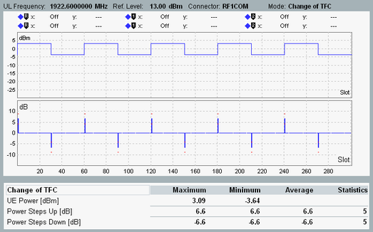

The result view displays two diagrams and a table with statistical results.

The diagrams show the measured UE power vs slot and the corresponding power steps between the slots. For a detailed description, refer to "Monitor Mode".
The measurement starts at a slot boundary with a power step. The measured range of slots depends on the configured number of steps to be measured, see "Number of Steps Up/Down".
The measurement expects alternating up and down power steps every 30 slots.
Maximum and minimum value of the measured UE power vs slot values displayed in the upper diagram.
These table rows provide a statistical evaluation of the measured power steps. The columns indicate the maximum, minimum and average measured power step value. The column "Statistics" indicates how many power step values have been considered for the statistical evaluation.
For query of the results via remote control, see "Measurement Results".